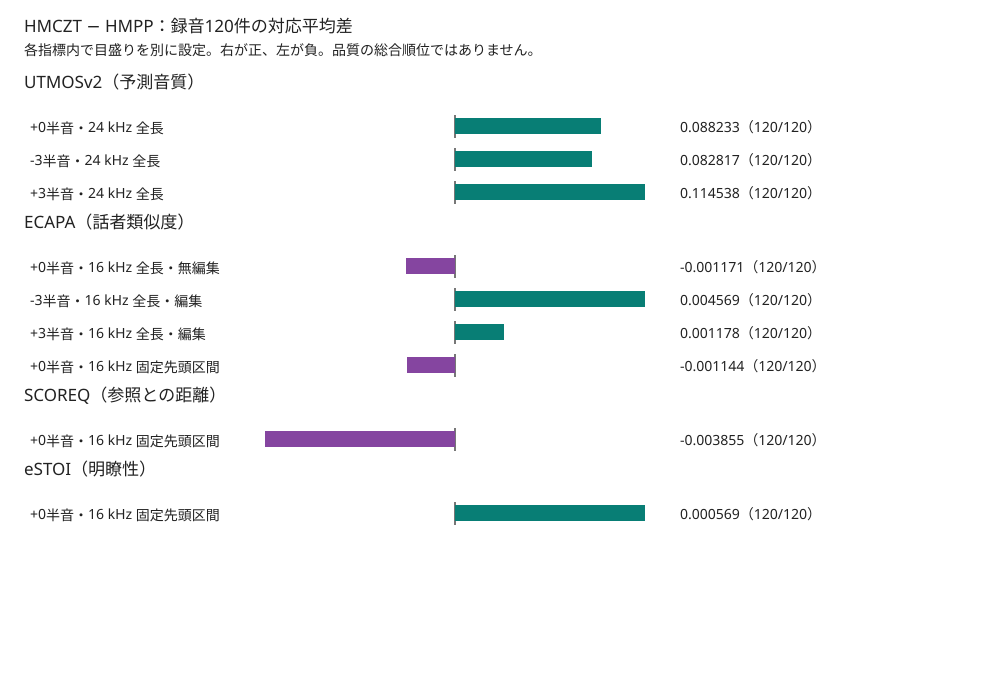

調波解析をHMPPとHMCZTで切り替えたApronの固定120録音比較
現ベースApronに相当するHMPPとHMCZTで、英語40話者・120録音を同じ入力から新たに解析した。無編集の対応平均差（HMCZT − HMPP）は、24 kHz全長のUTMOSv2で+0.088233、16 kHz全長のECAPAで−0.001171、固定先頭区間のSCOREQで−0.003855、eSTOIで+0.000569だった。SCOREQは低いほど良い。方向が分かれるため、今回の自動指標だけで品質優位や採用は決めず、Apronを維持する。
現ベースとの比較
各行は録音120件を等重みで集計した。差は録音ごとに十進数で計算してから平均した。太字はその指標内の平均順位1位で、総合順位や統計的な優位を示さない。表は小数第6位まで表示し、全桁・合計・最小・最大・欠測数は結果JSONに残した。
| 指標 | 音高 | 採点範囲 | HMPP | HMCZT | 対応差 | 対応数 |
|---|---|---|---|---|---|---|
| UTMOSv2（予測音質） | +0半音 | 24 kHz 全長 | 3.093787 | 3.182020（1位） | 0.088233 | 120/120 |
| UTMOSv2（予測音質） | -3半音 | 24 kHz 全長 | 3.120056 | 3.202873（1位） | 0.082817 | 120/120 |
| UTMOSv2（予測音質） | +3半音 | 24 kHz 全長 | 2.790779 | 2.905318（1位） | 0.114538 | 120/120 |
| ECAPA（話者類似度） | +0半音 | 16 kHz 全長・無編集 | 0.957407（1位） | 0.956236 | -0.001171 | 120/120 |
| ECAPA（話者類似度） | -3半音 | 16 kHz 全長・編集 | 0.839277 | 0.843846（1位） | 0.004569 | 120/120 |
| ECAPA（話者類似度） | +3半音 | 16 kHz 全長・編集 | 0.861286 | 0.862464（1位） | 0.001178 | 120/120 |
| ECAPA（話者類似度） | +0半音 | 16 kHz 固定先頭区間 | 0.957364（1位） | 0.956220 | -0.001144 | 120/120 |
| SCOREQ（参照との距離） | +0半音 | 16 kHz 固定先頭区間 | 0.243480 | 0.239626（1位） | -0.003855 | 120/120 |
| eSTOI（明瞭性） | +0半音 | 16 kHz 固定先頭区間 | 0.930536 | 0.931105（1位） | 0.000569 | 120/120 |
比較音声
既存レポートと同じ固定2録音から、各方式の0/−3/+3半音を先頭5秒だけ掲載した。24 kHzのPCM16変換に音量調整・再標本化・clipは加えていない。出典と改変、各音声のSHAを参照。
librispeech_1089-134686-0008
librispeech_1188-133604-0003
対応差の図
横棒の中央は差0。指標ごとに別尺度で描いたため、棒の長さを指標間で比較しない。

音高編集の変化
各方式の編集値から、その方式・同一録音の無編集値を引いた。右列は二方式の変化の差。ECAPAは全長同士を比較し、固定先頭区間とは混ぜていない。
| 指標 | 音高 | HMPP 編集差 | HMCZT 編集差 | 変化の差 |
|---|---|---|---|---|
| UTMOSv2（予測音質） | -3半音 | 0.026269 | 0.020853 | -0.005416 |
| UTMOSv2（予測音質） | +3半音 | -0.303007 | -0.276702 | 0.026305 |
| ECAPA（話者類似度） | -3半音 | -0.118130 | -0.112390 | 0.005740 |
| ECAPA（話者類似度） | +3半音 | -0.096121 | -0.093771 | 0.002349 |
方法・範囲・限界
固定16 kHz入力を一度だけ24 kHzに変換し、DIOとStoneMaskのF0を録音ごとに一度計算した。両方式には独立したfloat32のF0コピーを渡し、同じ新nativeバイナリの既存enumで切り替えた。各方式を元PCMから解析し、保存したLayer1状態を条件ごとに独立して復元した。予定240解析、720波形、2160品質値はすべて成功した。入力PCMのC前後変化は0標本、両方式のC後F0とLayer1 F0の差も0標本だった。各方式内ではC前後のF0変化が記録されている。
UTMOSv2は24 kHz全長、ECAPA編集は16 kHz全長、無編集のECAPA固定先頭区間・SCOREQ・eSTOIは原16 kHz参照との固定共通先頭区間を評価した。旧Layer0結果は今回の原波形と同一性を確認できない歴史的参考で、表や順位には混ぜていない。人の聴取、48 kHz、日本語、検定、信頼区間、総合点は対象外。新HMPPが旧Apron出力とビット一致したとは主張しない。
全個票の数値は品質個票（gzip圧縮JSON）、録音ごとの対応差と編集差は差の明細（gzip圧縮JSON）、入力・資産・compiler・binary・照合の来歴は来歴に保存した。全公開ファイルのbytes/SHAは一覧で確認できる。